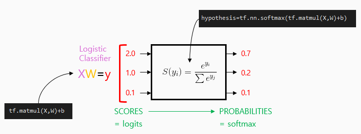
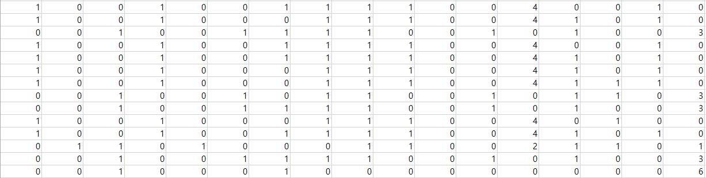
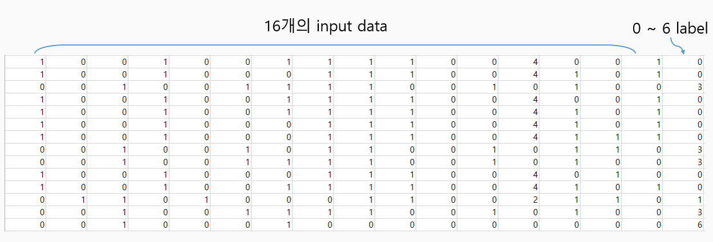

Softmax_cross_entropy_with_logits
logits = tf.matmul(X, W) + b
hypothesis = tf.nn.softmax(logits)
In TensorFlow
# Cross entropy cost/loss --- (1)
cost = tf.reduce_mean(-tf.reduce_sum(Y * tf.log(hypothesis), axis = 1))
# Cross entropy cost/loss --- (2)
cost_i = tf.nn.softmax_cross_entropy_with_logits(logits = logits, labels = Y_one_hot)
cost = tf.reduce_mean(cost_i)
# important! 1번이나 2번이나 cost의 결과 값은 같다.
Animal classification
with softmax_cross_entropy_with_logits
data-04-zoo.csv
# Predicting animal type based on various features
xy = np.loadtxt('data-04-zoo.csv', delimiter=',', dtype=np.float32)
x_data = xy[:, 0:-1]
y_data = xy[:, [-1]] # 마지막 행은 종 분류tf.one_hot and reshape

Y=tf.placeholder(tf.int32, [None, 1]) # 0~6, shape = (?, 1)
Y_one_hot=tf.one_hot(Y, nb_classes) # one hot shape = (?, 1, 7)
Y_one_hot=tf.reshape(Y_one_hot, [-1, nb_classes]) # shape = (?, 7)
one-hot encoding을 위한 Y라는 int형 [?, 1]의 1차원 placeholder생성하여
tf.one_hot으로 넘겨주면 한 차원을 더 wrapping한 [?, 1, nb_classes]꼴로 return 됨
때문에 reshape로 한 차원 더해진 wrapper를 변형해 주어야 한다.
softmax_zoo_classifier.py
# Lab 6 Softmax Classifier
import tensorflow as tf
import numpy as np
tf.set_random_seed(777) # for reproducibility
# Predicting animal type based on various features
xy = np.loadtxt('data-04-zoo.csv', delimiter=',', dtype=np.float32)
x_data = xy[:, 0:-1]
y_data = xy[:, [-1]]
print(x_data.shape, y_data.shape)
nb_classes = 7 # 0 ~ 6
X = tf.placeholder(tf.float32, [None, 16])
Y = tf.placeholder(tf.int32, [None, 1]) # 0 ~ 6
Y_one_hot = tf.one_hot(Y, nb_classes) # one hot
print("one_hot", Y_one_hot)
Y_one_hot = tf.reshape(Y_one_hot, [-1, nb_classes])
print("reshape", Y_one_hot) # 출력된 것을 보면 3차원에서 2차원으로 바뀐다.
W = tf.Variable(tf.random_normal([16, nb_classes]), name='weight')
b = tf.Variable(tf.random_normal([nb_classes]), name='bias')
# tf.nn.softmax computes softmax activations
# softmax = exp(logits) / reduce_sum(exp(logits), dim)
logits = tf.matmul(X, W) + b
hypothesis = tf.nn.softmax(logits)
# Cross entropy cost/loss ---> fancy version
cost_i = tf.nn.softmax_cross_entropy_with_logits(logits=logits, labels=Y_one_hot)
cost = tf.reduce_mean(cost_i)
optimizer = tf.train.GradientDescentOptimizer(learning_rate=0.1).minimize(cost)
prediction = tf.argmax(hypothesis, 1) # tf.argmax 참조(공식API doc)
correct_prediction = tf.equal(prediction, tf.argmax(Y_one_hot, 1))
accuracy = tf.reduce_mean(tf.cast(correct_prediction, tf.float32))
# tf.cast를 까먹었다면,
#lab05.html 혹은 https://www.tensorflow.org/api_docs/python/tf/cast 참조
# Launch graph
with tf.Session() as sess:
sess.run(tf.global_variables_initializer())
for step in range(2000):
sess.run(optimizer, feed_dict={X: x_data, Y: y_data})
if step % 100 == 0:
loss, acc = sess.run([cost, accuracy], feed_dict={X: x_data, Y: y_data})
print("Step: {:5}\tLoss: {:.3f}\tAcc: {:.2%}".format(step, loss, acc))
# Let's see if we can predict
pred = sess.run(prediction, feed_dict={X: x_data})
# y_data: (N,1) = flatten => (N, ) matches pred.shape
# 그니깐 y = [[1], [0]]을 y = [1, 0]으로 바꿔줌
for p, y in zip(pred, y_data.flatten()):
print("[{}] Prediction: {} True Y: {}".format(p == int(y), p, int(y)))
# [{}]는 []안에 True or False가 출력 됨결과 창
# result
one_hot Tensor("one_hot:0", shape=(?, 1, 7), dtype=float32)
reshape Tensor("Reshape:0", shape=(?, 7), dtype=float32)
Step : 0 Loss: 5.106 Acc: 37.623763%
Step : 100 Loss: 0.800 Acc: 79.207921%
Step : 200 Loss: 0.486 Acc: 88.118809%
Step : 300 Loss: 0.349 Acc: 90.099013%
Step : 400 Loss: 0.272 Acc: 94.059408%
Step : 500 Loss: 0.222 Acc: 95.049506%
Step : 600 Loss: 0.187 Acc: 97.029704%
Step : 700 Loss: 0.161 Acc: 97.029704%
Step : 800 Loss: 0.140 Acc: 97.029704%
Step : 900 Loss: 0.124 Acc: 97.029704%
Step : 1000 Loss: 0.111 Acc: 97.029704%
Step : 1100 Loss: 0.101 Acc: 99.009901%
Step : 1200 Loss: 0.092 Acc: 100.000000%
Step : 1300 Loss: 0.084 Acc: 100.000000%
...
[True] Prediction: 0 True Y: 0
[True] Prediction: 0 True Y: 0
[True] Prediction: 3 True Y: 3
[True] Prediction: 0 True Y: 0
[True] Prediction: 0 True Y: 0
[True] Prediction: 0 True Y: 0
[True] Prediction: 0 True Y: 0
[True] Prediction: 3 True Y: 3
[True] Prediction: 3 True Y: 3
[True] Prediction: 0 True Y: 0
[True] Prediction: 0 True Y: 0
[True] Prediction: 1 True Y: 1
[True] Prediction: 3 True Y: 3
[True] Prediction: 6 True Y: 6
[True] Prediction: 6 True Y: 6
[True] Prediction: 6 True Y: 6
[True] Prediction: 1 True Y: 1
[True] Prediction: 0 True Y: 0
...